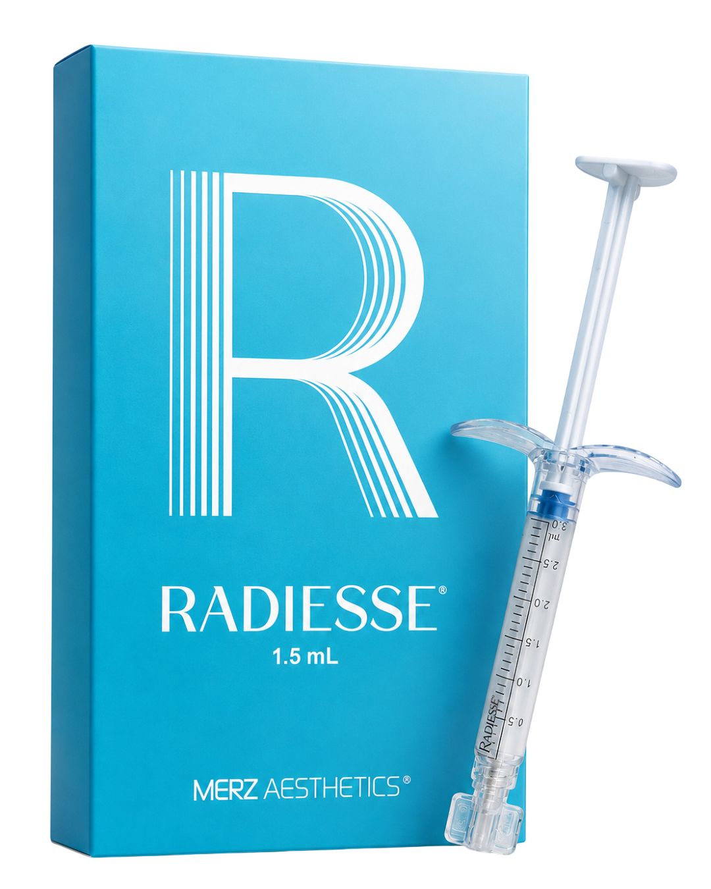

Raffermit
RADIESSE® améliore la fermeté, l'élasticité et l'hydratation de votre peau.5
- +31,8%de collagène à 6 mois.
Mesuré histologiquement sur prélèvements abdominaux à 6 mois après traitement par CaHA diluée (1:1) vs sérum physiologique (contrôle). D'après les données de Goldie et al., 2025.17
Les données issues de cette étude histologique ne sont pas strictement extrapolables à l'efficacité clinique.
Comment agit RADIESSE® ?
Avec le temps, votre peau produit moins de collagène et d’élastine,15
responsables de la fermeté de la peau.
Un biostimulateur régénérateur injectable est un traitement esthétique qui aide à stimuler votre peau pour qu'elle se régénère elle-même.*
* Les indications dépendent du produit utilisé.

RADIESSE® agit pour améliorer la qualité de votre peau en profondeur en 3 étapes.1-4
L'implant injectable RADIESSE® est injecté sous la peau.
Il vient stimuler la production d'élastine et de collagène.1–3
Il aide à améliorer la structure* de la peau.
STRUCTURE
Collagène de type I
Le renouvellement du collagène de type I contribue à renforcer la peau et à améliorer sa résistance.5,11
SOUTIEN
Collagène de type III
Soutient l’amélioration de la qualité de la peau et joue un rôle clé dans la stabilisation du collagène de type I.16
ÉLASTICITÉ
Élastine
Aide la peau à retrouver son élasticité naturelle, sa souplesse et son effet rebondi.6
ÉCLAT
Protéoglycanes
Aident la peau à retenir l’hydratation et à préserver un aspect repulpé et lumineux.16
NUTRITION
Angiogenèse
Favorise la création de nouveaux vaisseaux sanguins pour nourrir les tissus cutanés en oxygène et en nutriments, et soutenir la santé de la peau.17,20